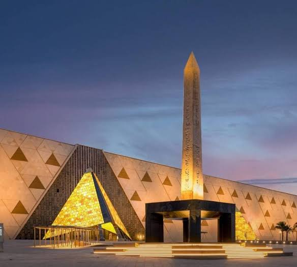
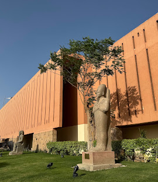

My favorite places in Egyot.
The Grand egyptian museum
The Egyptian Museum is one of the most important and famous museums in Egypt and the world. It is located in Tahrir Square in Cairo. The museum contains a large collection of ancient Egyptian artifacts that tell the story of the great Egyptian civilization. The museum contains statues, coffins, jewelry, and tools used by ancient Egyptians. It also has important artifacts from different periods. One of its most famous collections is the treasures of King Tutankhamun. The museum helps visitors learn about the life, art, and customs of the ancient Egyptians. It also shows how advanced the ancient Egyptian civilization was in many fields. In conclusion, the Egyptian Museum is an important historical treasure. We should protect Egyptian artifacts and take care of the history and civilization of our country.

Pyramids
The Pyramids are one of the most famous landmarks in Egypt and the world. They are located in Giza, near Cairo. The most famous pyramids are the Great Pyramid of Khufu, the Pyramid of Khafre, and the Pyramid of Menkaure. The ancient Egyptians built the pyramids as tombs for their kings. The Great Pyramid of Khufu is the largest of the three pyramids. The pyramids show the great skills and intelligence of the ancient Egyptians. Today, millions of tourists visit the pyramids every year to see their amazing design and learn about ancient Egyptian civilization. In conclusion, the Pyramids are a great symbol of Egypt and an important part of our history.

Luxor Museum
Luxor Museum is one of the most famous museums in Egypt. It is located in Luxor, near the Nile River. The museum contains many important artifacts from ancient Egyptian civilization. Visitors can see statues, jewelry, pottery, and other ancient objects inside the museum. Some of these artifacts belonged to ancient Egyptian kings and queens. Luxor Museum helps visitors learn more about the history and culture of ancient Egypt. It is also a beautiful and interesting place for tourists to visit. In conclusion, Luxor Museum is an important part of Egypts history and a wonderful place to learn about our ancient civilization.
